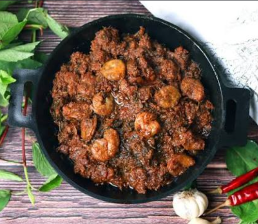

Andhra Style Gongura Prawns
Gongura Prawns is a traditional Andhra delicacy prepared with juicy
prawns cooked in tangy gongura (sorrel) leaves and aromatic spices.
The unique sourness of gongura blends beautifully with the prawns,
making it a flavorful dish that pairs perfectly with hot steamed rice.
Ingredients
- 500g prawns, cleaned and deveined
- 2 bunches fresh gongura (sorrel) leaves
- 2 onions, finely chopped
- 2 green chilies, slit
- 1 tbsp ginger-garlic paste
- 2 tbsp oil
- 1 tsp mustard seeds
- 1 tsp cumin seeds
- 8–10 curry leaves
- 1 tsp turmeric powder
- 1½ tsp red chili powder
- 1 tsp coriander powder
- ½ tsp garam masala
- Salt to taste
- Fresh coriander leaves for garnish (optional)
Instructions
- Wash the gongura leaves thoroughly and cook them until wilted. Allow them to cool and blend into a coarse paste.
- Heat oil in a pan and add mustard seeds, cumin seeds, and curry leaves.
- Add chopped onions and sauté until golden brown.
- Mix in ginger-garlic paste and green chilies. Cook for 1 minute.
- Add turmeric, chili powder, coriander powder, and salt.
- Add the cleaned prawns and cook for 5–6 minutes until they begin to turn pink.
- Stir in the gongura paste and mix well.
- Cook on low heat for another 8–10 minutes until the prawns are fully cooked and the oil separates.
- Sprinkle garam masala and mix gently.
- Serve hot with steamed rice and a dollop of ghee.
Cooking Time
Preparation: 20 minutes
Cooking: 25 minutes
Total Time: 45 minutes
Serving Suggestion
Gongura Prawns is best served with hot steamed rice, ghee,
chapati, or jowar roti. It is a popular Andhra-style dish
loved for its spicy and tangy flavor.
← Back to Home